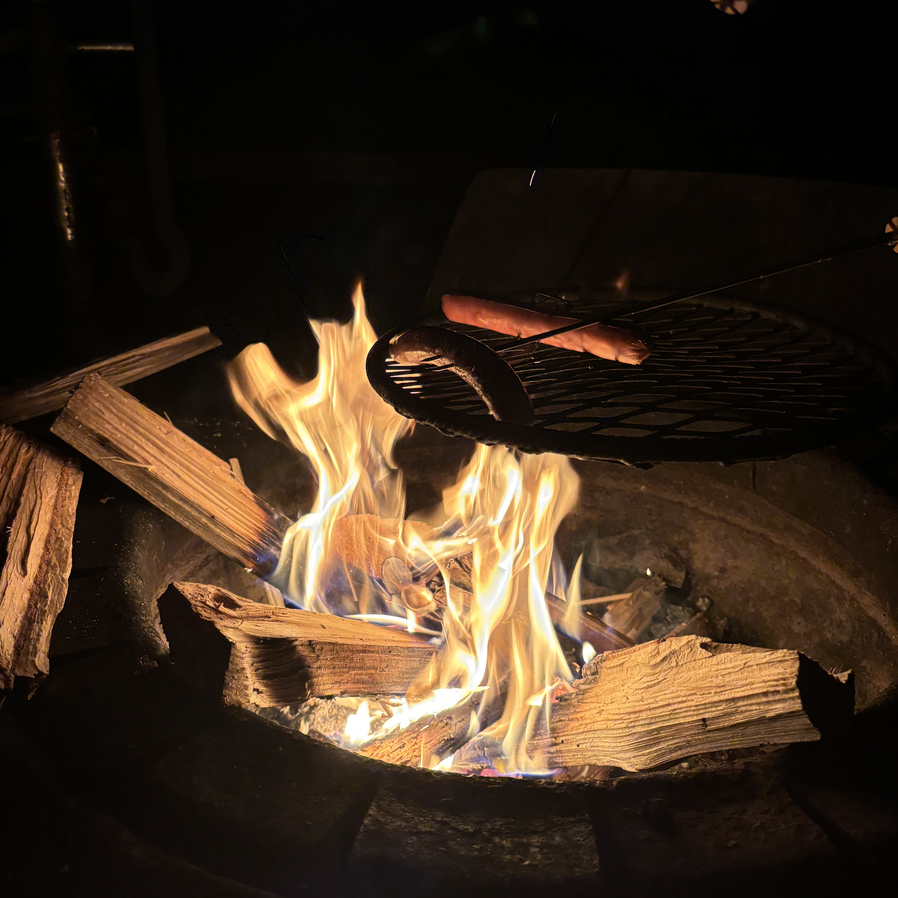
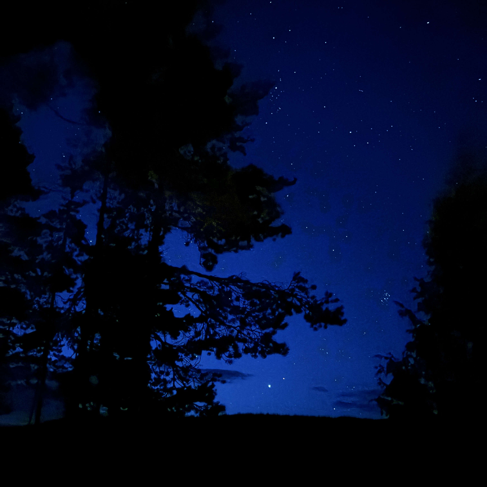

A starry night at Repovesi
Published: 18/08/2024
For ages, I've dreamt of camping beneath a sky lit by stars and stardust. Maybe I was enchanted by the idea in some classic children's novels I read long ago: Anne and Emily series, both written by Lucy M. Montgomery. And now, I’m over the moon to announce that: I made it happen!!—not as Milky Way-ish as I had imagined, but it was as magnificent and magical as my heart could wish.
The mystical camping night was experienced at Talas campsite, Repovesi, Finland. Repovesi is a national park located in northern Kouvola, about a 1-hour car trip away. From Saarijärvi, we traversed the 26 km Kaakkurinkierros trail and stopped at Talas when we were exhausted by the challenging rocky terrain. Isolated from residential areas, the clear sky revealed a celestial dance of countless stars upon an abyss stage.
At that moment, I felt blessed by Mother Nature who endowed me the privilege to admire such a breathtaking landscape. The whole time my reactions were, “Wow, look at that!” “Wooooow, it’s so beautiful,” until my eyes opened wide enough to reflect the glow of the brilliant stars. I felt dwarfed by nature, yet deeply connected, included in this community of more-than-human wonders, and trusted to witness its hidden beauty.
I was surrounded by darkness, wildness, vastness, and the unfamiliar, yet there was no sense of fear. It’s the warmth from the campfire, the person next to me, and the ethereal brightness of the stars and constellations that ignited my inner security. 
The experience recalled the last time I saw a starry night, around a decade ago. I was visiting Binh Dinh, my dad's hometown, to attend a relative's wedding. Binh Dinh was a small province and, at that time, still rural. As vividly as my memory could serve me, it was early morning, around 3 or 5 AM, when my cousins, my grandma, and I strolled along a typical rural dirt road filled with stones, backpacks slung over our shoulders, heading to the train station to return to Da Nang. Somehow my head tilted upward, and I was randomly struck by a diamond-strewn sky. That memory has stayed with me ever since; and even at such young age, I knew that such natural beauty was too mesmerizing to experience only once in a lifetime.
Sitting by the campfire amidst the darkness at Repovesi, there’s a song echoing in my mind: "Starry, Starry Night." Transcending what Van Gogh could capture, what I beheld that night was picturesque.
Shooting for the moon sounds ideal, but have you tried reaching for the stars or chasing the Milky Way? :) 
Any thoughts?